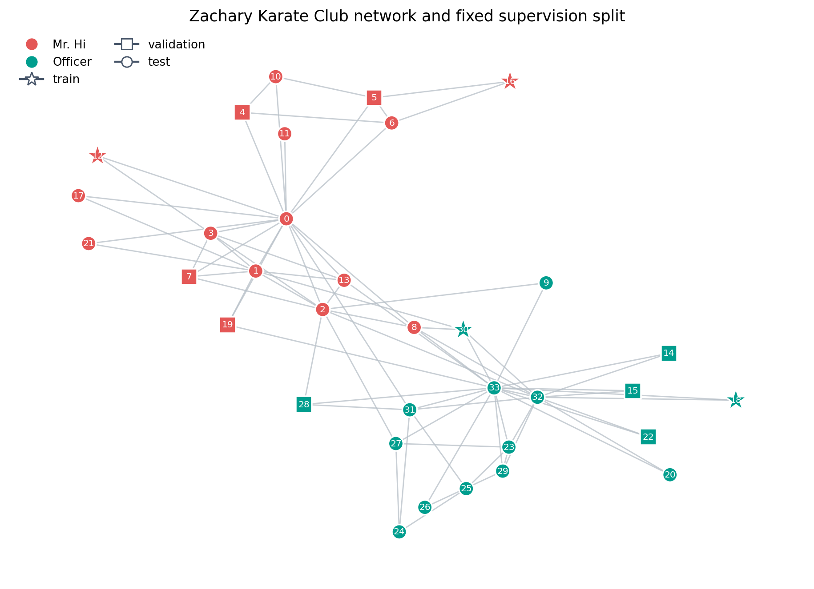
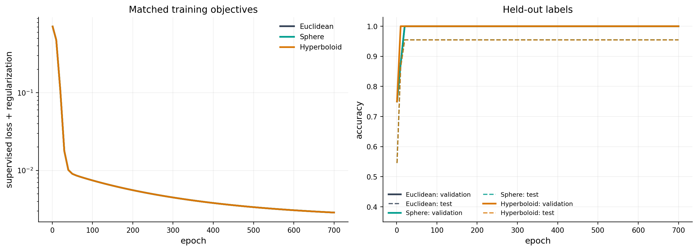
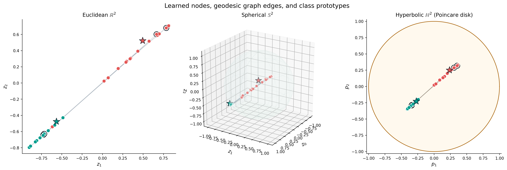
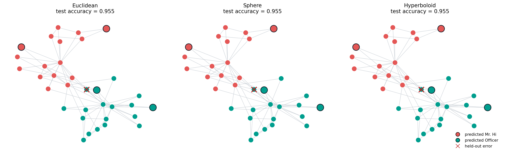
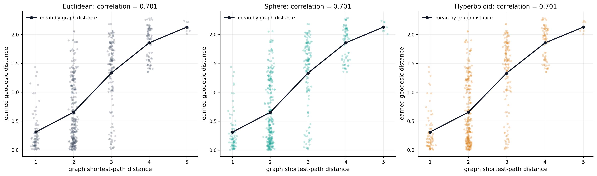

Curvature-aware graph learning#
Graph neural networks combine information along graph edges, while manifold-valued learning changes the space in which the resulting features live. This tutorial puts the two ideas together on Zachary’s Karate Club network, a published social network with 34 people and 78 observed relationships [Zachary, 1977].
We compare matched node classifiers whose two-dimensional latent representations live in
The encoder, initialization, labeled nodes, and optimizer are identical. Only the latent geometry changes. After lifting encoder outputs to the selected manifold, each node aggregates its neighbors in its own tangent space and moves by an exponential-map step. Classification then uses squared geodesic distance to two learned class prototypes.
This is a controlled demonstration of GeoJAX primitives, not a reproduction of a full hyperbolic graph neural network or a benchmark claim. Modern graph convolutions motivate the normalized adjacency encoder [Kipf and Welling, 2017], while hyperbolic graph networks motivate performing representation learning beyond Euclidean space [Chami et al., 2019]. The broader geometric-deep-learning viewpoint is surveyed by Bronstein et al. [2021].
import jax
import jax.numpy as jnp
import matplotlib.pyplot as plt
import networkx as nx
import numpy as np
from matplotlib.lines import Line2D
from geojax.geometry import Euclidean, Hyperboloid, Sphere
from geojax.learning import geodesic_interpolation, pairwise_distances
plt.rcParams.update({
"figure.dpi": 210,
"savefig.dpi": 280,
"font.size": 11,
"axes.titlesize": 12,
"axes.labelsize": 11,
"xtick.labelsize": 9,
"ytick.labelsize": 9,
"legend.fontsize": 9,
"axes.spines.top": False,
"axes.spines.right": False,
})
class_colors = np.array(["#E45756", "#009E8E"])
geometry_colors = {
"Euclidean": "#334155",
"Sphere": "#009E8E",
"Hyperboloid": "#D97706",
}
Data and supervision#
The network records ties among members of a university karate club that later split into two groups. The observed group after the split supplies a binary node label. We use only two labeled nodes from each group for training, four from each group for validation, and hold out the remaining 22 labels. All nodes and edges remain visible to the encoder, so this is a transductive semi-supervised problem.
graph = nx.karate_club_graph()
n_nodes = graph.number_of_nodes()
adjacency_np = nx.to_numpy_array(
graph,
nodelist=range(n_nodes),
dtype=np.float32,
)
labels_np = np.array(
[
0 if graph.nodes[node]["club"] == "Mr. Hi" else 1
for node in range(n_nodes)
],
dtype=np.int32,
)
rng = np.random.default_rng(12)
train_indices = []
validation_indices = []
test_indices = []
for label in (0, 1):
indices = np.flatnonzero(labels_np == label)
rng.shuffle(indices)
train_indices.extend(indices[:2])
validation_indices.extend(indices[2:6])
test_indices.extend(indices[6:])
train_indices = np.asarray(train_indices)
validation_indices = np.asarray(validation_indices)
test_indices = np.asarray(test_indices)
print("nodes:", n_nodes, "edges:", graph.number_of_edges())
print(
"train / validation / test labels:",
len(train_indices),
len(validation_indices),
len(test_indices),
)
nodes: 34 edges: 78
train / validation / test labels: 4 8 22
The graph layout below is used only for visualization. Marker shape records the supervision split; color records the true post-split club.
layout = nx.spring_layout(graph, seed=9, k=0.48)
fig, ax = plt.subplots(figsize=(8.6, 6.2), constrained_layout=True)
nx.draw_networkx_edges(
graph,
layout,
ax=ax,
edge_color="#B7C0C8",
width=1.0,
alpha=0.75,
)
split_styles = [
("train", train_indices, "*", 330),
("validation", validation_indices, "s", 155),
("test", test_indices, "o", 130),
]
for _, indices, marker, size in split_styles:
nx.draw_networkx_nodes(
graph,
layout,
nodelist=indices.tolist(),
node_color=class_colors[labels_np[indices]],
node_shape=marker,
node_size=size,
edgecolors="white",
linewidths=1.2,
ax=ax,
)
nx.draw_networkx_labels(
graph,
layout,
labels={node: str(node) for node in graph.nodes},
font_size=7,
font_color="white",
ax=ax,
)
ax.legend(
handles=[
Line2D(
[0], [0], marker="o", color="none",
markerfacecolor=class_colors[0], markeredgecolor="none",
label="Mr. Hi", markersize=9,
),
Line2D(
[0], [0], marker="o", color="none",
markerfacecolor=class_colors[1], markeredgecolor="none",
label="Officer", markersize=9,
),
Line2D(
[0], [0], marker="*", color="#475569",
markerfacecolor="white", label="train", markersize=11,
),
Line2D(
[0], [0], marker="s", color="#475569",
markerfacecolor="white", label="validation", markersize=8,
),
Line2D(
[0], [0], marker="o", color="#475569",
markerfacecolor="white", label="test", markersize=8,
),
],
loc="upper left",
frameon=False,
ncol=2,
)
ax.set_title("Zachary Karate Club network and fixed supervision split")
ax.set_axis_off()
plt.show()

A matched intrinsic architecture#
Add self-loops to the adjacency matrix \(A\) and define the symmetrically normalized operator
With one-hot node identities \(X=I\), the shared Euclidean encoder is
The two coordinates \(a_i\) are radially capped and lifted from the common base point \(o=(1,0,0)\):
For the Euclidean model, \(\mathcal E=\{(1,z_1,z_2)\}\subset\mathbb R^3\) is an affine copy of \(\mathbb R^2\). The three-coordinate representation gives every classifier the same ambient width.
The geometry-aware neighborhood update is
where \(\alpha\in(0,1)\) is learned. Every message \(m_i\) belongs to \(T_{h_i^{(0)}}\mathcal M\), so vectors based at different nodes are never added before being expressed in a common tangent space.
Finally, two learned prototypes \(\mu_0,\mu_1\in\mathcal M\) define logits
This prototype rule makes the decision geometry explicit. Hyperbolic neural networks use related exponential/logarithmic constructions, although production architectures may also learn curvature, change tangent bases between layers, and use richer aggregation [Chami et al., 2019, Ganea et al., 2018].
adjacency = jnp.asarray(adjacency_np)
adjacency_with_self_loops = adjacency + jnp.eye(n_nodes)
degrees = jnp.sum(adjacency_with_self_loops, axis=1)
normalized_adjacency = (
adjacency_with_self_loops
/ jnp.sqrt(degrees[:, None])
/ jnp.sqrt(degrees[None, :])
)
features = jnp.eye(n_nodes)
labels = jnp.asarray(labels_np)
train_mask = jnp.zeros(n_nodes, dtype=bool).at[jnp.asarray(train_indices)].set(True)
validation_mask = (
jnp.zeros(n_nodes, dtype=bool)
.at[jnp.asarray(validation_indices)]
.set(True)
)
test_mask = jnp.zeros(n_nodes, dtype=bool).at[jnp.asarray(test_indices)].set(True)
base_point = jnp.array([1.0, 0.0, 0.0], dtype=jnp.float32)
geometries = {
"Euclidean": Euclidean(size=3),
"Sphere": Sphere(size=3),
"Hyperboloid": Hyperboloid(size=3),
}
def init_dense(key, input_size, output_size):
limit = np.sqrt(6.0 / (input_size + output_size))
return {
"weight": jax.random.uniform(
key,
shape=(input_size, output_size),
minval=-limit,
maxval=limit,
),
"bias": jnp.zeros(output_size),
}
def init_parameters(key):
keys = jax.random.split(key, 3)
return {
"input": init_dense(keys[0], n_nodes, 16),
"latent": init_dense(keys[1], 16, 2),
"prototypes": 0.15 * jax.random.normal(keys[2], shape=(2, 2)),
"raw_step": jnp.asarray(-0.2),
"raw_temperature": jnp.asarray(1.0),
}
def dense(parameters, values):
return values @ parameters["weight"] + parameters["bias"]
def radial_cap(values, radius=1.75):
squared_norm = jnp.sum(values * values, axis=-1, keepdims=True)
return values / jnp.sqrt(1.0 + squared_norm / radius**2)
def tangent_coordinates(values):
zeros = jnp.zeros(values.shape[:-1] + (1,), dtype=values.dtype)
return jnp.concatenate([zeros, values], axis=-1)
def intrinsic_neighbor_step(geometry, points, step_size):
logarithms = geometry.log(points[:, None, :], points[None, :, :])
messages = jnp.sum(normalized_adjacency[..., None] * logarithms, axis=1)
return geometry.exp(points, step_size * messages)
def make_model(geometry):
def forward(parameters):
hidden = jnp.tanh(
normalized_adjacency @ dense(parameters["input"], features)
)
coordinates = normalized_adjacency @ dense(parameters["latent"], hidden)
points = geometry.exp(
base_point,
tangent_coordinates(radial_cap(coordinates)),
)
learned_step = jax.nn.sigmoid(parameters["raw_step"])
points = intrinsic_neighbor_step(geometry, points, learned_step)
prototypes = geometry.exp(
base_point,
tangent_coordinates(radial_cap(parameters["prototypes"])),
)
temperature = jax.nn.softplus(parameters["raw_temperature"]) + 1.0
logits = -temperature * pairwise_distances(
geometry,
points,
prototypes,
squared=True,
)
return logits, points, prototypes, learned_step, temperature
def loss(parameters):
logits, _, _, _, _ = forward(parameters)
log_probabilities = jax.nn.log_softmax(logits, axis=-1)
supervised_loss = -jnp.mean(
log_probabilities[train_mask, labels[train_mask]]
)
regularizer = 1e-4 * sum(
jnp.sum(leaf * leaf)
for leaf in jax.tree_util.tree_leaves(parameters)
)
return supervised_loss + regularizer
return forward, loss
Train all three geometries#
The following Adam implementation is deliberately self-contained. It updates ordinary network parameters in Euclidean parameter space while differentiating through manifold exponential maps, logarithms, and squared distances. Each model starts from exactly the same parameter pytree.
def zeros_like_tree(tree):
return jax.tree_util.tree_map(jnp.zeros_like, tree)
def accuracy(predictions, mask):
return jnp.mean(predictions[mask] == labels[mask])
def train_model(geometry, epochs=700, learning_rate=1e-2):
forward, loss = make_model(geometry)
parameters = init_parameters(jax.random.key(42))
first_moment = zeros_like_tree(parameters)
second_moment = zeros_like_tree(parameters)
@jax.jit
def step(parameters, first_moment, second_moment, iteration):
value, gradients = jax.value_and_grad(loss)(parameters)
first_moment = jax.tree_util.tree_map(
lambda moment, gradient: 0.9 * moment + 0.1 * gradient,
first_moment,
gradients,
)
second_moment = jax.tree_util.tree_map(
lambda moment, gradient: 0.999 * moment + 0.001 * gradient**2,
second_moment,
gradients,
)
corrected_first = jax.tree_util.tree_map(
lambda moment: moment / (1.0 - 0.9**iteration),
first_moment,
)
corrected_second = jax.tree_util.tree_map(
lambda moment: moment / (1.0 - 0.999**iteration),
second_moment,
)
parameters = jax.tree_util.tree_map(
lambda parameter, mean, variance: (
parameter
- learning_rate * mean / (jnp.sqrt(variance) + 1e-8)
),
parameters,
corrected_first,
corrected_second,
)
return parameters, first_moment, second_moment, value
history = []
for epoch in range(1, epochs + 1):
parameters, first_moment, second_moment, value = step(
parameters,
first_moment,
second_moment,
jnp.asarray(epoch, dtype=jnp.int32),
)
if epoch == 1 or epoch % 10 == 0:
logits, _, _, _, _ = forward(parameters)
predictions = jnp.argmax(logits, axis=-1)
history.append([
epoch,
float(value),
float(accuracy(predictions, train_mask)),
float(accuracy(predictions, validation_mask)),
float(accuracy(predictions, test_mask)),
])
logits, points, prototypes, learned_step, temperature = forward(parameters)
predictions = jnp.argmax(logits, axis=-1)
return {
"parameters": parameters,
"history": np.asarray(history),
"logits": logits,
"points": points,
"prototypes": prototypes,
"predictions": predictions,
"step": float(learned_step),
"temperature": float(temperature),
}
results = {
name: train_model(geometry)
for name, geometry in geometries.items()
}
print(
f"{'geometry':13s} {'train':>8s} {'validation':>12s} "
f"{'test':>8s} {'step':>8s} {'valid':>8s}"
)
print("-" * 63)
for name, geometry in geometries.items():
result = results[name]
predictions = result["predictions"]
valid = bool(
jnp.all(geometry.belongs(result["points"]))
& jnp.all(geometry.belongs(result["prototypes"]))
)
print(
f"{name:13s} "
f"{float(accuracy(predictions, train_mask)):8.3f} "
f"{float(accuracy(predictions, validation_mask)):12.3f} "
f"{float(accuracy(predictions, test_mask)):8.3f} "
f"{result['step']:8.3f} {str(valid):>8s}"
)
geometry train validation test step valid
---------------------------------------------------------------
Euclidean 1.000 1.000 0.955 0.515 True
Sphere 1.000 1.000 0.955 0.516 True
Hyperboloid 1.000 1.000 0.955 0.515 True
The validation labels were not used for early stopping or model selection; they are reported to make the fixed split transparent. The test result is a small-sample diagnostic, not an uncertainty-qualified performance estimate.
Optimization behavior#
fig, axes = plt.subplots(1, 2, figsize=(12.4, 4.4), constrained_layout=True)
for name, result in results.items():
history = result["history"]
axes[0].plot(
history[:, 0],
history[:, 1],
color=geometry_colors[name],
linewidth=2.2,
label=name,
)
axes[1].plot(
history[:, 0],
history[:, 3],
color=geometry_colors[name],
linewidth=2.2,
label=f"{name}: validation",
)
axes[1].plot(
history[:, 0],
history[:, 4],
color=geometry_colors[name],
linewidth=1.5,
linestyle="--",
alpha=0.85,
label=f"{name}: test",
)
axes[0].set(
title="Matched training objectives",
xlabel="epoch",
ylabel="supervised loss + regularization",
yscale="log",
)
axes[0].legend(frameon=False)
axes[0].grid(alpha=0.18)
axes[1].set(
title="Held-out labels",
xlabel="epoch",
ylabel="accuracy",
ylim=(0.35, 1.03),
)
axes[1].legend(frameon=False, ncol=2, fontsize=8)
axes[1].grid(alpha=0.18)
plt.show()

The learned manifold representations#
The same abstract operation can be visualized in three coordinate models.
Edges below are shortest-geodesic interpolations computed by
geojax.learning.geodesic_interpolation(); they are not straight chords
drawn through the ambient space.
times = jnp.linspace(0.0, 1.0, 18)
edge_pairs = list(graph.edges())
def edge_geodesics(geometry, points):
return [
np.asarray(
geodesic_interpolation(
geometry,
points[source],
points[target],
times,
)
)
for source, target in edge_pairs
]
def to_poincare(points):
points = np.asarray(points)
return points[..., 1:] / (points[..., :1] + 1.0)
fig = plt.figure(figsize=(16.2, 5.3), constrained_layout=True)
axes = [
fig.add_subplot(1, 3, 1),
fig.add_subplot(1, 3, 2, projection="3d"),
fig.add_subplot(1, 3, 3),
]
# Euclidean affine plane.
euclidean = results["Euclidean"]
euclidean_points = np.asarray(euclidean["points"])[:, 1:]
euclidean_prototypes = np.asarray(euclidean["prototypes"])[:, 1:]
for curve in edge_geodesics(geometries["Euclidean"], euclidean["points"]):
axes[0].plot(curve[:, 1], curve[:, 2], color="#AAB4BE", linewidth=0.7, alpha=0.55)
axes[0].scatter(
euclidean_points[:, 0],
euclidean_points[:, 1],
c=class_colors[labels_np],
s=62,
edgecolors="white",
linewidths=0.8,
zorder=3,
)
axes[0].scatter(
euclidean_prototypes[:, 0],
euclidean_prototypes[:, 1],
c=class_colors,
marker="*",
s=260,
edgecolors="#17202A",
linewidths=1.0,
zorder=4,
)
axes[0].scatter(
euclidean_points[train_indices, 0],
euclidean_points[train_indices, 1],
s=145,
facecolors="none",
edgecolors="#17202A",
linewidths=1.4,
)
axes[0].set(
title=r"Euclidean $\mathbb{R}^2$",
xlabel=r"$z_1$",
ylabel=r"$z_2$",
aspect="equal",
)
# Sphere.
sphere = results["Sphere"]
sphere_points = np.asarray(sphere["points"])
sphere_prototypes = np.asarray(sphere["prototypes"])
longitude = np.linspace(0.0, 2.0 * np.pi, 48)
latitude = np.linspace(0.0, np.pi, 25)
sx = np.outer(np.cos(longitude), np.sin(latitude))
sy = np.outer(np.sin(longitude), np.sin(latitude))
sz = np.outer(np.ones_like(longitude), np.cos(latitude))
axes[1].plot_surface(
sx,
sy,
sz,
color="#E8F5F2",
alpha=0.18,
linewidth=0,
shade=False,
)
axes[1].plot_wireframe(
sx,
sy,
sz,
color="#9BBDB7",
alpha=0.18,
linewidth=0.35,
rstride=4,
cstride=4,
)
for curve in edge_geodesics(geometries["Sphere"], sphere["points"]):
axes[1].plot(
curve[:, 0],
curve[:, 1],
curve[:, 2],
color="#8A99A8",
linewidth=0.7,
alpha=0.55,
)
axes[1].scatter(
sphere_points[:, 0],
sphere_points[:, 1],
sphere_points[:, 2],
c=class_colors[labels_np],
s=42,
depthshade=False,
edgecolors="white",
linewidths=0.7,
)
axes[1].scatter(
sphere_prototypes[:, 0],
sphere_prototypes[:, 1],
sphere_prototypes[:, 2],
c=class_colors,
marker="*",
s=220,
depthshade=False,
edgecolors="#17202A",
linewidths=1.0,
)
axes[1].set(
title=r"Spherical $\mathbb{S}^2$",
xlabel=r"$z_0$",
ylabel=r"$z_1$",
zlabel=r"$z_2$",
)
axes[1].set_box_aspect((1, 1, 1))
axes[1].view_init(elev=22, azim=32)
# Hyperboloid shown in the Poincare disk.
hyperboloid = results["Hyperboloid"]
hyperbolic_points = to_poincare(hyperboloid["points"])
hyperbolic_prototypes = to_poincare(hyperboloid["prototypes"])
disk_angle = np.linspace(0.0, 2.0 * np.pi, 500)
axes[2].fill(
np.cos(disk_angle),
np.sin(disk_angle),
color="#FFF7E6",
alpha=0.65,
)
axes[2].plot(
np.cos(disk_angle),
np.sin(disk_angle),
color="#A86106",
linewidth=1.2,
)
for curve in edge_geodesics(geometries["Hyperboloid"], hyperboloid["points"]):
curve_disk = to_poincare(curve)
axes[2].plot(
curve_disk[:, 0],
curve_disk[:, 1],
color="#9A8F82",
linewidth=0.7,
alpha=0.55,
)
axes[2].scatter(
hyperbolic_points[:, 0],
hyperbolic_points[:, 1],
c=class_colors[labels_np],
s=62,
edgecolors="white",
linewidths=0.8,
zorder=3,
)
axes[2].scatter(
hyperbolic_prototypes[:, 0],
hyperbolic_prototypes[:, 1],
c=class_colors,
marker="*",
s=260,
edgecolors="#17202A",
linewidths=1.0,
zorder=4,
)
axes[2].scatter(
hyperbolic_points[train_indices, 0],
hyperbolic_points[train_indices, 1],
s=145,
facecolors="none",
edgecolors="#17202A",
linewidths=1.4,
)
axes[2].set(
title=r"Hyperbolic $\mathbb{H}^2$ (Poincare disk)",
xlabel=r"$p_1$",
ylabel=r"$p_2$",
xlim=(-1.03, 1.03),
ylim=(-1.03, 1.03),
aspect="equal",
)
fig.suptitle(
"Learned nodes, geodesic graph edges, and class prototypes",
fontsize=14,
)
plt.show()

The plots are coordinate-dependent views, but the training rule is intrinsic: it uses each geometry’s logarithm, exponential, and distance. In particular, the Poincare disk is only a visualization of the points learned in the hyperboloid model.
Predictions on a common layout#
Showing predictions in the original graph layout separates classification behavior from coordinate distortion in the latent plots. A red cross marks a held-out error; a black ring marks one of the four training labels.
fig, axes = plt.subplots(1, 3, figsize=(15.8, 4.8), constrained_layout=True)
for ax, (name, result) in zip(axes, results.items()):
predictions = np.asarray(result["predictions"])
test_accuracy = float(
np.mean(predictions[test_indices] == labels_np[test_indices])
)
nx.draw_networkx_edges(
graph,
layout,
ax=ax,
edge_color="#C2C9D0",
width=0.9,
alpha=0.72,
)
nx.draw_networkx_nodes(
graph,
layout,
ax=ax,
node_color=class_colors[predictions],
node_size=135,
edgecolors="white",
linewidths=0.8,
)
nx.draw_networkx_nodes(
graph,
layout,
nodelist=train_indices.tolist(),
ax=ax,
node_color=class_colors[predictions[train_indices]],
node_size=235,
edgecolors="#17202A",
linewidths=1.4,
)
errors = test_indices[predictions[test_indices] != labels_np[test_indices]]
if len(errors):
error_xy = np.asarray([layout[int(node)] for node in errors])
ax.scatter(
error_xy[:, 0],
error_xy[:, 1],
marker="x",
s=145,
linewidths=2.0,
color="#B91C1C",
zorder=5,
)
ax.set_title(f"{name}\ntest accuracy = {test_accuracy:.3f}")
ax.set_axis_off()
axes[-1].legend(
handles=[
Line2D(
[0], [0], marker="o", color="none",
markerfacecolor=class_colors[0], label="predicted Mr. Hi",
markersize=9,
),
Line2D(
[0], [0], marker="o", color="none",
markerfacecolor=class_colors[1], label="predicted Officer",
markersize=9,
),
Line2D(
[0], [0], marker="x", color="#B91C1C",
linestyle="none", label="held-out error", markersize=9,
),
],
loc="lower right",
frameon=False,
)
plt.show()

Does latent distance reflect graph distance?#
Node classification alone does not tell us whether a latent space retains global graph structure. As a descriptive check, compare all unordered-pair shortest-path lengths in the graph with learned geodesic distances. This correlation was not optimized directly.
graph_distances = np.zeros((n_nodes, n_nodes), dtype=float)
for source, lengths in nx.all_pairs_shortest_path_length(graph):
for target, length in lengths.items():
graph_distances[source, target] = length
upper_triangle = np.triu(np.ones_like(graph_distances, dtype=bool), k=1)
jitter_rng = np.random.default_rng(4)
fig, axes = plt.subplots(1, 3, figsize=(15.8, 4.6), constrained_layout=True)
for ax, (name, geometry) in zip(axes, geometries.items()):
points = results[name]["points"]
latent_distances = np.sqrt(
np.maximum(
np.asarray(
pairwise_distances(geometry, points, points, squared=True)
),
0.0,
)
)
graph_values = graph_distances[upper_triangle]
latent_values = latent_distances[upper_triangle]
correlation = np.corrcoef(graph_values, latent_values)[0, 1]
jitter = jitter_rng.normal(scale=0.045, size=graph_values.shape)
ax.scatter(
graph_values + jitter,
latent_values,
color=geometry_colors[name],
s=15,
alpha=0.24,
edgecolors="none",
)
unique_distances = np.unique(graph_values)
mean_distances = [
latent_values[graph_values == value].mean()
for value in unique_distances
]
ax.plot(
unique_distances,
mean_distances,
color="#111827",
marker="o",
linewidth=2.0,
markersize=5,
label="mean by graph distance",
)
ax.set(
title=f"{name}: correlation = {correlation:.3f}",
xlabel="graph shortest-path distance",
ylabel="learned geodesic distance",
xticks=unique_distances,
)
ax.grid(alpha=0.18)
ax.legend(frameon=False, loc="upper left")
plt.show()

The relation is not expected to be perfectly monotone: four labels supervise a classification objective, not a graph-distortion objective. The diagnostic nevertheless makes a useful methodological distinction. Curvature can change how latent volume grows and how graph neighborhoods are arranged [Chami et al., 2019, Nickel and Kiela, 2017], but that benefit must be tested with an objective and data whose structure can reveal it.
What this example establishes#
GeoJAX exponential maps, logarithms, and squared distances can be differentiated together inside a compiled graph-learning objective.
An intrinsic neighbor aggregate can be written once and applied unchanged to Euclidean, spherical, and hyperbolic representations.
Learned manifold prototypes provide a common geometric classifier.
Membership checks, common-layout predictions, and graph-distance diagnostics test different aspects of the result.
A stronger study would repeat the split, tune on validation data, report uncertainty, compare against non-geometric baselines, and use larger hierarchical graphs. Those additions concern experimental design; the geometry-aware computation demonstrated here remains the same.
References#
Michael M. Bronstein, Joan Bruna, Taco Cohen, and Petar Veličković. Geometric deep learning: grids, groups, graphs, geodesics, and gauges. arXiv preprint arXiv:2104.13478, 2021. doi:10.48550/arXiv.2104.13478.
Ines Chami, Rex Ying, Christopher Ré, and Jure Leskovec. Hyperbolic graph convolutional neural networks. In Advances in Neural Information Processing Systems, volume 32. 2019. URL: https://proceedings.neurips.cc/paper/2019/hash/0415740eaa4d9decbc8da001d3fd805f-Abstract.html.
Octavian-Eugen Ganea, Gary Bécigneul, and Thomas Hofmann. Hyperbolic neural networks. In Advances in Neural Information Processing Systems, volume 31. 2018. URL: https://proceedings.neurips.cc/paper/2018/hash/dbab2adc8f9d078009ee3fa810bea142-Abstract.html.
Thomas N. Kipf and Max Welling. Semi-supervised classification with graph convolutional networks. In International Conference on Learning Representations. 2017. URL: https://openreview.net/forum?id=SJU4ayYgl.
Maximilian Nickel and Douwe Kiela. Poincaré embeddings for learning hierarchical representations. In Advances in Neural Information Processing Systems, volume 30. 2017. URL: https://proceedings.neurips.cc/paper/2017/hash/59dfa2df42d9e3d41f5b02bfc32229dd-Abstract.html.
Wayne W. Zachary. An information flow model for conflict and fission in small groups. Journal of Anthropological Research, 33(4):452–473, 1977. doi:10.1086/jar.33.4.3629752.